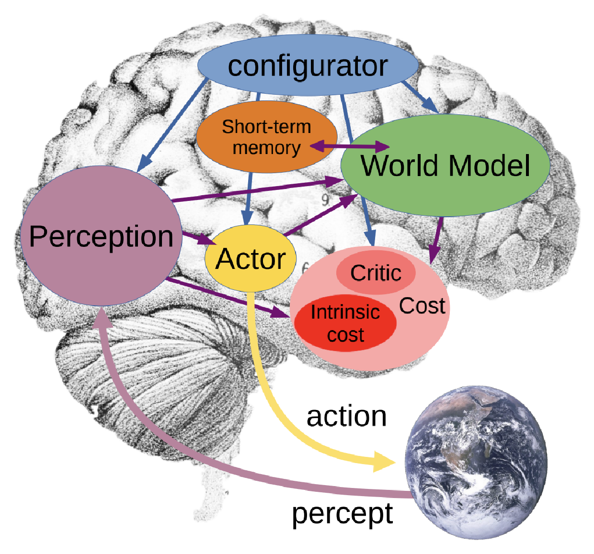
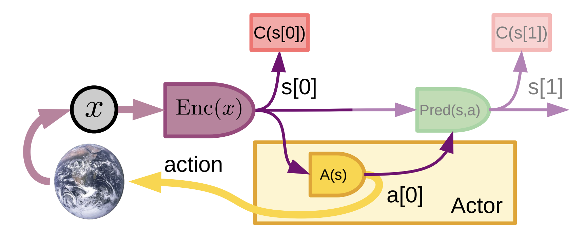
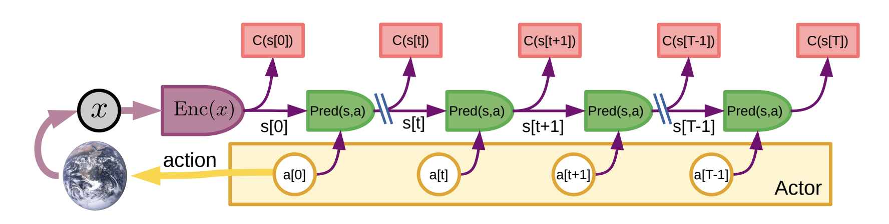
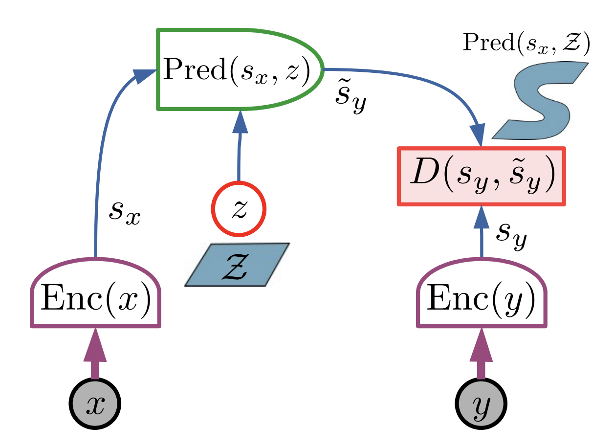
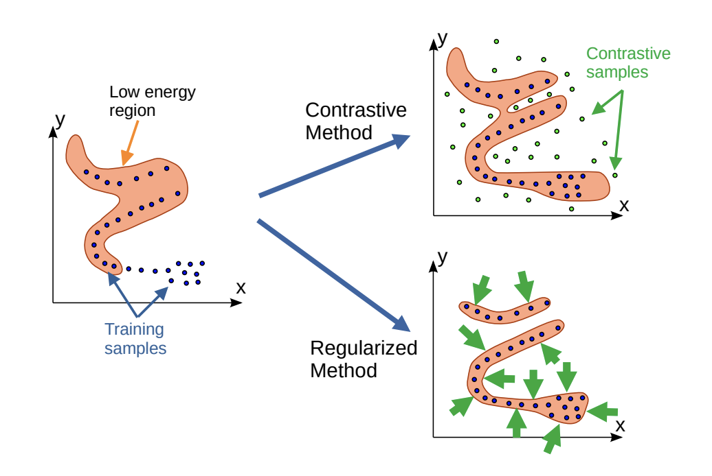
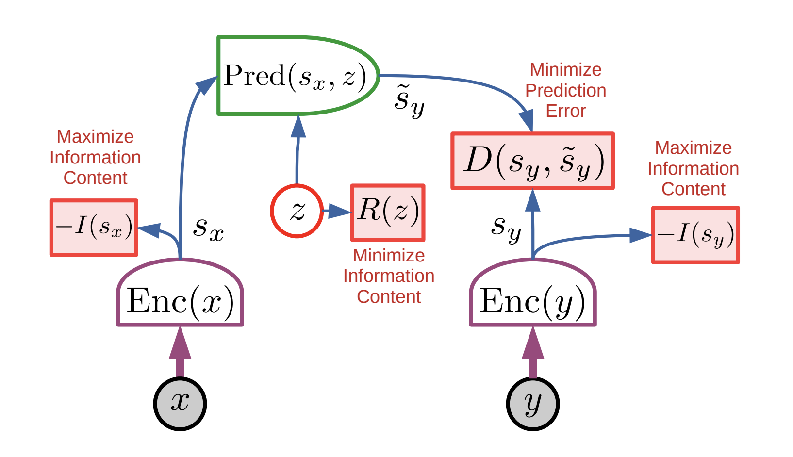

A Path Towards Autonomous Machine Intelligence
- How could machines learn as efficiently as humans and animals?
- How could machines learn to reason and plan?
- How could machines learn representations at multiple levels of abstraction, to predict and plan over multiple time horizons?
A Path Towards Autonomous Machine Intelligence (LeCun, 2022) proposes an architecture and training paradigms for building autonomous intelligent agents. It combines:
- a configurable predictive world model
- behaviour driven by intrinsic motivation
- hierarchical joint embedding architectures, trained with self-supervised learning
In this post I go through these ideas, keeping them as simple, short, and direct as I can.
Why world models
A teenager learns to drive in about twenty hours of practice. A child picks up a language from what is, all things considered, a small amount of listening. A baby learns that unsupported objects fall, and that a hidden toy still exists, in the first months of life, mostly by observing, with very little trial and error. And we handle the unexpected with ease: find a fallen tree across your path, and you just step over it or walk around.
Machines are still far from this. To be reliable, a machine learning system has to see so much data that even the rarest combination of situations shows up many times during training. Self-driving cars are the clearest example. They are fed huge amounts of driving data from human experts, put through millions of trials in simulation, and given hundreds of behaviours hand-written by engineers. Even so, matching the reliability of human drivers remains a hard problem. Humans, by contrast, rely on intuitive physics to predict how things will turn out.
The paper suggests that humans and animals carry a world model: an internal model of how the world works, learned by observation. The knowledge it holds is what we call common sense. It tells us what is likely, plausible, or impossible, fills in what is hidden, predicts what happens next, and lets us imagine the result of an action before taking it. And when something contradicts it, we pay attention: it may be a danger, or a chance to learn.
So the central question becomes: how can a machine learn a world model mostly from observation, using unlabelled data? It breaks into three smaller problems.
Learn by observing. In the real world, trying things is slow, expensive, and sometimes dangerous. A robot that learns by crashing breaks itself; a car that learns by crashing hurts someone. So an agent should learn as much as it can just by observing (seeing, hearing, touching) and save real trials for the few lessons only experience can teach.
Reason with gradients. The learning methods that work best today follow the gradient of a loss, which requires every part of the system to be differentiable. Classic reasoning is built on discrete symbols and logic, which makes the two hard to combine. So reasoning and planning have to be rebuilt in a form that gradients can flow through.
Think in levels. Babies build their knowledge in layers: depth → objects → objects persist and move smoothly → some things move predictably, others erratically, like leaves in the wind → gravity and inertia → cause and effect → language and social rules. Plans work the same way. You plan dinner in big steps: pick a recipe, buy the ingredients, cook. "Cook" becomes chop, fry, stir, and each of those becomes movements of your hands. Machines need the same thing: representations and plans at several levels of abstraction, so they can predict and plan both a second ahead and a day ahead.
The paper proposes possible solutions to all three: an architecture where every module is differentiable, a way to learn a world model by observing (JEPA), and a stack of such models for planning at several levels (H-JEPA). The rest of this post goes through them one by one.
The architecture
Here is the architecture the paper suggests for an autonomous intelligent agent:

The agent is built from six modules. Open any of them to see how it works.
Given a task, it modulates the parameters and attention of the other modules it communicates to (perception, world model, cost, actor) for that specific task. So the same modules behave differently from one task to the next. How it learns to break a complex task into subgoals in the first place is left open for future investigation.
Estimates the current state of the world from sensor signals, at one or more levels of abstraction. Of that state, it extracts only the relevant information for the task (set by the configurator).
The world model component has two main roles:
- estimate the information about the state of the world that perception does not provide
- predict how the world will evolve, on its own or under actions the actor proposes
Both of these are performed within an abstract representation space, and ideally the world model would be able to manipulate representations of the world state at multiple levels of abstraction, allowing it to predict over multiple time scales.
The world model has to represent several possible predictions, because the natural world is not completely predictable. This is especially true when it contains other agents, possibly adversarial ones, but even inanimate objects can behave chaotically or have a state that is not fully observable.
There are two essential questions to answer when building the proposed architectures: (1) how to allow the world model to make multiple plausible predictions and represent uncertainty in the predictions, and (2) how to train the world model.
Turns a state into one number, its energy: high for discomfort, low for comfort. The agent's objective is to act so as to stay in states that minimise the average energy. That energy is the sum of two terms, computed by two sub-modules.
Intrinsic cost: hardwired and fixed. It measures discomfort right now, pain up, pleasure down, and the ultimate goal of the agent is to minimise it over the long run. This is where the agent's basic drives live, so its design shapes the whole behaviour: feeling good when a legged robot stands up (so it learns to walk), when the energy supply is full (hunger), when meeting a new situation (curiosity), when nearby people are happy (empathy); feeling bad near fire, or while handling dangerous tools. Learning leaves this part untouched, so the agent cannot drift towards bad behaviour by rewriting what it wants.
Critic: trainable. It predicts an estimate of future intrinsic energies, taking either the current state of the world or states the world model predicts. To train, it takes past states together with the intrinsic costs that followed them, and learns to predict the second from the first. It has two uses: seeing long-term outcomes without running the expensive world model, and giving the configurator a learned cost to point at a sub-goal inside a bigger task.
Both sub-modules are differentiable, so the gradient of the energy can be back-propagated through the other modules, particularly the world model, the actor and perception, for planning, reasoning and learning.
So here is the cost formula:
Here $C(s)$ is the energy of a state $s$, $\mathrm{IC}$ the hardwired intrinsic cost, and $\mathrm{TC}$ the trainable critic. Each half is itself a weighted sum of sub-modules, one per drive, and those weights $u_i$ and $v_j$ are what the configurator turns to put the agent on a different subgoal.
It keeps track of past, current, and future states, together with their intrinsic cost. The world model reads from it and writes to it while temporally predicting future (or past) states of the world, and while spatially completing missing or inconsistent information about the current state. The critic learns from what it stores.
It decides what to do. It proposes a sequence of actions, the world model predicts where they lead, and the cost scores the result. The actor then improves the sequence, using the gradient of the cost (or dynamic programming, when the actions are discrete). Once it settles on a plan, it executes the first action, and the loop starts again.
The actor may come in two parts: (1) a policy module, which turns the state estimate it gets from perception and short-term memory straight into an action, and (2) the action optimiser described above.
It searches over two kinds of variable: actions, for the sequence that lowers the cost, and latents, to cover the futures it cannot rule out. In an adversarial setting it does the opposite with the latents, and looks for the ones that raise the cost.
There is only one world model, and the configurator re-tunes it for the task at hand. One engine means knowledge is shared across tasks, and a model set up for one situation can be reused for another: reasoning by analogy.
Look closer at Figure 2. There's a tiny 9 and a tiny 6 hiding in it. I've circled both in red, because otherwise nobody ever spots them.
![The proposed architecture drawn over a sketch of a brain: a configurator at the top with arrows into perception, short-term memory, the actor and the world model; perception feeding the world model and the actor; the world model exchanging with short-term memory and feeding a cost module containing an intrinsic cost and a critic; the actor emitting an action to the world, and the world returning a percept to perception. Two small numbers in the frontal lobe are circled in red: a 9 beneath the world model, and a 6 immediately beside the actor.](../../assets/posts/path-towards-autonomous-machine-intelligence/architecture-circled.png)
After some thorough research (I just asked Claude 😅), it turns out that:
Area 9 is the dorsolateral prefrontal cortex, sitting in the upper, deep prefrontal region of the frontal lobe (are you happy now? 😒), responsible for: working memory, complex planning, cognitive flexibility. Organising thoughts, managing attention, and calculating the long-term consequences of actions. Which is, entirely coincidentally, where LeCun has placed his World Model and his Short-Term Memory.
Area 6 is the premotor and supplementary motor cortex, further back in the frontal lobe, immediately in front of the primary motor strip (are you happy now? 😒), handling motor planning, movement preparation, and voluntary motor sequencing. It does not execute the twitch itself. It assembles the blueprint of a movement before you make it, the way you work out the order your fingers need to close in to catch a ball. Which is, again entirely coincidentally, where he has put the Actor.
So on a diagram about deliberative planning and action selection, the two anatomical labels that happened to survive the collage are the planning area and the motor-planning area, and each is sitting underneath the module that does its job.
Did he leave them there on purpose?
| Answer | $p$ |
|---|---|
| Yes | 0.0001 |
| I am a psycho | 0.9999 |
Two ways to act
Perception produces a state, a policy maps it straight to an action. The world model stays idle. Fast and cheap.

Perception encodes the observation into a state, $s[0] = \mathrm{Enc}(x)$, and the policy module turns it straight into an action, $a[0] = A(s[0])$. Here $x$ is the observation, $s[0]$ the state, and $A$ the policy. The cost still scores the state, $f[0] = C(s[0])$, and the pair is stored in short-term memory, but it steers nothing: this reactive loop leaves the world model and the cost out of the decision.
Optionally, the world model predicts $s[1] = \mathrm{Pred}(s[0], a[0])$. That prediction is no part of acting, it is bonus training: when the real next observation arrives, the world model is adjusted to match it.
The agent imagines where its actions lead before taking any of them.

An episode runs in seven steps:
- Perceive. Perception turns the observation into a state, and the cost scores it.
- Propose. The actor puts forward a sequence of actions for the world model to try.
- Simulate. The world model rolls the state forward through that sequence.
- Evaluate. The cost scores every predicted state, and the total is their sum.
- Plan. The actor proposes a cheaper sequence, usually by following the gradient of the total cost back to the actions. Steps 2 to 5 repeat until it settles.
- Act. The actor sends the first action (or first few) to the effectors, and the whole episode starts again from the new observation.
- Remember. After every action, the states and their costs, from both the intrinsic cost and the critic, go into short-term memory, where they can later train or adapt the critic.
Written out, the actor is looking for
where $x$ is the observation, $s[t]$ the state at step $t$, $a[t]$ the action taken there, $C$ the cost, $T$ the horizon it plans over, and $\check{a}[0{:}T]$ the cheapest sequence it finds.
Planning a sequence, executing its first action, then planning again from what you see is model-predictive control, a standard method in optimal control. What is new here is that both the world model and the cost are learned.
The two modes feed each other. Mode-2 works a new problem out slowly, then Mode-1 is trained to imitate the result, so next time the skill is automatic. That is learning to drive: at first every move is deliberate, later it happens on its own.
In this view, reasoning is energy minimisation: finding the actions that make the cost as low as possible. The world model is trained the same way, as an energy function $F(x, y)$ scoring how well a candidate future $y$ fits what has been seen so far, $x$: low for plausible pairs, high for the rest. Unlike a probability, it never has to be normalised over every possible future, which in a continuous space is intractable anyway. And where several futures stay open, the choice between them is carried by a latent variable $z$, which stands for what $x$ cannot tell you about $y$: whether the car in front suddenly brakes.
JEPA: predict representations instead of pixels
The obvious way to learn a world model is to predict the future directly, in pixels. The problem is that most of the future is unpredictable detail. In a video of a tree in the wind, the trunk is easy, the branches roughly predictable, each leaf essentially random. A pixel model is graded on every leaf anyway, and its safest guess is a blur.
The Joint Embedding Predictive Architecture (JEPA) predicts in representation space instead, and never produces $y$ itself. Encode the input $x$ into $s_x$, encode the target $y$ into $s_y$, then predict $s_y$ from $s_x$ and the latent $z$, and measure the error there:

$F(x, y)$ is the energy of the pair: low when $y$ is a plausible continuation of $x$. $D$ is a distance in representation space, $\mathrm{Pred}$ the predictor, and $R(z)$ a regulariser that limits how much the latent can carry, which is point 4 of the recipe below. Taking the minimum over $z$ asks: under the most favourable choice of latent, how close can the prediction get?
Working in representation space is what buys this. The model is never asked to reconstruct every pixel, a job that would take unlimited data and compute and still fail on the parts that were never predictable. It spends its capacity on the branches and lets the leaves go.
Collapse, the hard part
There is a catch. If both encoders output the same constant for every input, the prediction is perfect and the representation is worthless. This is collapse, and the paper is upfront that it is the central difficulty. Where it comes from depends on the architecture: a latent that carries too much, a code that carries too much, or encoders that carry too little.

Two families of fixes exist. Contrastive methods push the energy up on bad pairs, which needs an enormous number of them to cover a high-dimensional space. Regularised methods instead shrink the low-energy region until it wraps tightly around the data, and this is what the paper recommends, in four parts:
- maximise the information $s_x$ carries about $x$
- maximise the information $s_y$ carries about $y$
- make $s_y$ easy to predict from $s_x$
- minimise the information in the latent $z$

The first two keep the representations alive; the last keeps the predictor honest, since a rich $z$ lets it smuggle the answer through. Keeping it poor is a matter of making it discrete, low-dimensional, sparse, or noisy. For the first two the paper suggests VICReg, though plenty of work has gone into this since: Avoiding collapse follows that history, from the early tricks to the methods in use today.
Hierarchical JEPA
One JEPA predicts one step ahead in one representation. Planning a trip from New York to Paris in those steps would be hopeless, so you plan it in big ones: get to the airport, catch a flight. Getting to the airport becomes: go down to the street, find a taxi. And so on, down to where to put your feet.
![A two-level hierarchical JEPA. Below the dashed line, JEPA-1: observations x0, x1 and x2 each go through an encoder Enc1 to give representations s1[0], s1[1] and s1[2], and a predictor Pred1 with its own latent z1 and regulariser R1 predicts s1[1] from s1[0], scored by D1. Above the line, JEPA-2: the representations from Enc1 are encoded again by Enc2 into s2[0] and s2[2], and a predictor Pred2 with latent z2 and regulariser R2 predicts across two time steps at once, scored by D2.](../../assets/posts/path-towards-autonomous-machine-intelligence/h-jepa-stack.png)
H-JEPA stacks JEPAs to match. Lower levels keep detail and predict a short time ahead. Higher levels keep only abstract information, which is exactly what lets them predict far ahead. Planning follows the same stack: a higher level picks a subgoal, and the level below treats reaching it as its cost. This is the paper's answer to reasoning and planning over multiple time horizons, and it stayed a sketch until H-JEPA in 2026.
The recommendations
LeCun later summed these choices up in his talks:
| Prefer | Over |
|---|---|
| Joint-embedding architectures | Generative models |
| Energy-based models | Probabilistic models |
| Regularised methods | Contrastive methods |
| Model-predictive control | Reinforcement learning |
The talks add two more points:
- drop auto-regressive generation
- use reinforcement learning only when planning does not lead to the predicted outcome, to adjust the world model or the critic
What is left open
Turning the architecture into a working system is a lot of hard work, and the paper ends by naming the questions it can already foresee:
- whether a hierarchical JEPA can be built and trained from video at all, and whether it would learn the hierarchy of abstract concepts described earlier.
- how precisely to regularise the latent so its information content stays low. Discrete, low-dimensional, sparse, stochastic: the options are listed, and which works best is open.
- how the actor should infer latent values and optimal action sequences. Everything is differentiable, so gradients are available in principle, though a discrete action space or a jumpy cost may call for dynamic programming, tree search or other gradient-free methods instead.
- how to instantiate several latent values in one planning episode. People flip spontaneously between readings of an ambiguous image, as with the Necker cube, and no mechanism here does the same.
- what the modules look like inside, down to the routing and gating the predictor will probably need, and how the short-term memory should hold beliefs about the world.
- the configurator, the least understood part of all, above all how it finds the sequence of subgoals a complex task breaks into.
And these are only the foreseeable ones.
The paper closes with three connections it offers as guesses rather than claims.
Emotions. Pain, pleasure and hunger are what an intrinsic cost feels like from the inside; fear and elation are the critic anticipating outcomes. On this reading, any agent built this way has the equivalent of emotions, as a consequence of being driven by a cost rather than a bolted-on extra.
Consciousness. One world model engine, reconfigured for each task, would explain why we can reason consciously about only one thing at a time. The paper goes further and wonders whether the sense of consciousness is a side-effect of having a configurator at all: with a brain large enough to hold a separate model for every situation, no configurator would be needed, and the illusion might vanish.
Common sense. It is the ability to use a world model to fill in blanks: what happens next, what is behind the occluder, what could never have happened. LLMs pick up a startling amount of knowledge from text, yet much of common sense is never written down because it comes from dealing with the physical world, which leaves theirs shallow.
Where it led
Everything since, the work this paper set off and the lines that run alongside it, is collected in A map of the world-model literature.